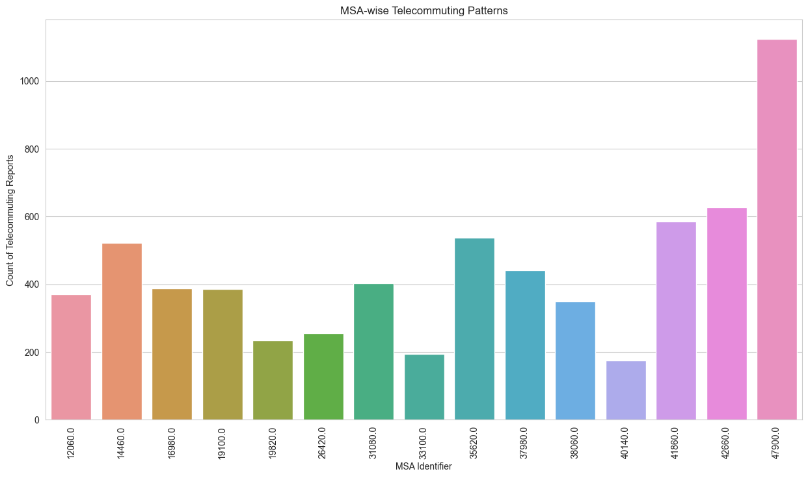
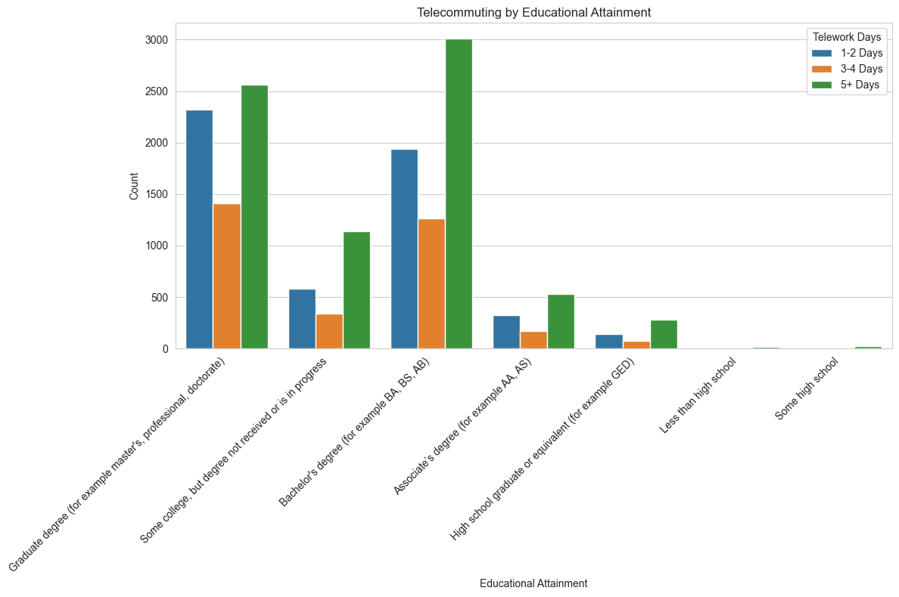
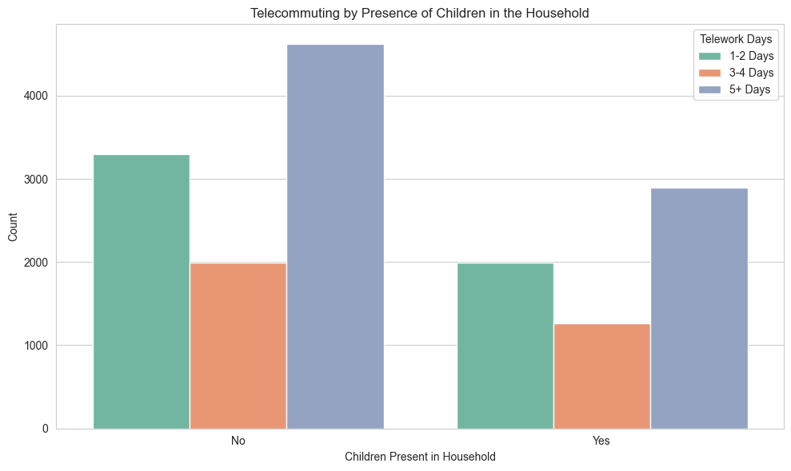

import pandas as pdpd.set_option('display.max_columns', None)df1 = pd.read_csv('hps_04_00_02_puf.csv')
df1.head()| SCRAM | CYCLE | EST_ST | EST_MSA | REGION | HWEIGHT | PWEIGHT | TBIRTH_YEAR | ABIRTH_YEAR | RHISPANIC | AHISPANIC | RRACE | ARACE | EEDUC | AEDUC | MS | EGENID_BIRTH | AGENID_BIRTH | GENID_DESCRIBE | SEXUAL_ORIENTATION | THHLD_NUMPER | AHHLD_NUMPER | THHLD_NUMKID | AHHLD_NUMKID | THHLD_NUMADLT | KIDS_LT5Y | KIDS_5_11Y | KIDS_12_17Y | ENRPUBCHK | ENRPRVCHK | ENRHMSCHK | TENROLLPUB | TENROLLPRV | TENROLLHMSCH | ENROLLNONE | ACTVDUTY1 | ACTVDUTY2 | ACTVDUTY3 | ACTVDUTY4 | ACTVDUTY5 | RECVDVACC | HADCOVIDRV | SYMPTOMS | LONGCOVID | SYMPTMNOW | WRKLOSSRV | ANYWORK | KINDWORK | RSNNOWRKRV | EXPNS_DIF | TWDAYS | CURFOODSUF | CHILDFOOD | FOODRSNRV1 | FOODRSNRV2 | FOODRSNRV3 | FOODRSNRV4 | FREEFOOD | SCHLFDHLP_RV1 | SCHLFDHLP_RV2 | SCHLFDHLP_RV3 | SCHLFDHLP_RV4 | SCHLFDHLP_RV5 | FDBENEFIT1 | ANXIOUS | WORRY | INTEREST | DOWN | HLTHINS1 | HLTHINS2 | HLTHINS3 | HLTHINS4 | HLTHINS5 | HLTHINS6 | HLTHINS7 | HLTHINS8 | PRIVHLTH | PUBHLTH | SEEING | HEARING | REMEMBERING | MOBILITY | SELFCARE | UNDERSTAND | TENURE | RENTCHNG | LIVQTRRV | RENTCUR | MORTCUR | TMNTHSBHND | EVICT | FORCLOSE | ENERGY | HSE_TEMP | ENRGY_BILL | INCOME | SYMPTMIMPCT | PRICECHNG | PRICESTRESS | PRICECONCRN | TWDAYS_RESP | FRMLA_YN | FRMLA_AGE | FRMLA_DIFFCLT | GAS1 | GAS2 | GAS3 | GAS4 | SCHLFDHLP_RV6 | SCHLFDHLP_RV7 | SCHLFDHLP_RV8 | FDBENEFIT2 | SCHLFDEXPNS | ND_DISPLACE | ND_TYPE1 | ND_TYPE2 | ND_TYPE3 | ND_TYPE4 | ND_TYPE5 | ND_HOWLONG | ND_DAMAGE | ND_FDSHRTAGE | ND_WATER | ND_ELCTRC | ND_UNSANITARY | ND_ISOLATE | ND_CRIME | ND_SCAM | FDBENEFIT3 | BABY_FED | MHLTH_NEED | MHLTH_GET | MHLTH_SATISFD | MHLTH_DIFFCLT | MOVEWHY1 | MOVEWHY2 | MOVEWHY3 | MOVEWHY4 | MOVEWHY5 | MOVEWHY6 | MOVEWHY7 | MOVEWHY8 | MOVED | WHENCOVIDRV1 | WHENCOVIDRV2 | WHENCOVIDRV3 | VETERAN1 | VETERAN2 | VETERAN3 | VETERAN4 | VETERAN5 | CHILDCARE | CHILDCARE_RSLT1 | CHILDCARE_RSLT2 | CHILDCARE_RSLT3 | CHILDCARE_RSLT4 | CHILDCARE_RSLT5 | CHILDCARE_RSLT6 | CHILDCARE_RSLT7 | CHILDCARE_RSLT8 | CHILDCARE_RSLT9 | SOCIAL1 | SOCIAL2 | SUPPORT1 | SUPPORT2 | SUPPORT3 | SUPPORT4 | SUPPORT1EXP | RVACCDATE | RSVVACC | |
|---|---|---|---|---|---|---|---|---|---|---|---|---|---|---|---|---|---|---|---|---|---|---|---|---|---|---|---|---|---|---|---|---|---|---|---|---|---|---|---|---|---|---|---|---|---|---|---|---|---|---|---|---|---|---|---|---|---|---|---|---|---|---|---|---|---|---|---|---|---|---|---|---|---|---|---|---|---|---|---|---|---|---|---|---|---|---|---|---|---|---|---|---|---|---|---|---|---|---|---|---|---|---|---|---|---|---|---|---|---|---|---|---|---|---|---|---|---|---|---|---|---|---|---|---|---|---|---|---|---|---|---|---|---|---|---|---|---|---|---|---|---|---|---|---|---|---|---|---|---|---|---|---|---|---|---|---|---|---|---|---|---|---|---|---|---|---|---|---|---|---|
| 0 | P020000001 | 2 | 32 | NaN | 4 | 704.966315 | 2067.690868 | 1976 | 1 | 1 | 2 | 2 | 2 | 6 | 2 | 4 | 2 | 2 | 2 | 2 | 3 | 2 | 0 | 2 | 3 | -88 | -88 | -88 | -88 | -88 | -88 | -88 | -88 | -88 | -88 | -99 | -99 | -99 | -99 | -99 | 1 | -99 | -88 | -88 | -88 | -99 | -99 | -88 | -88 | 1 | -99 | 2 | -88 | -99 | 1 | 1 | -99 | 2 | -88 | -88 | -88 | -88 | -88 | 1 | 4 | 4 | 4 | 4 | -99 | -99 | -99 | 1 | -99 | -99 | -99 | -99 | 3 | 1 | 3 | 1 | 3 | 2 | 3 | 1 | 3 | 2 | 6 | 1 | -88 | -88 | -88 | -88 | 2 | 2 | 3 | 2 | -88 | 4 | -88 | 2 | -88 | -88 | -88 | -88 | -99 | -99 | -99 | -99 | -88 | -88 | -88 | -99 | -88 | -99 | -88 | -88 | -88 | -88 | -88 | -88 | -88 | -88 | -88 | -88 | -88 | -88 | -88 | -88 | -99 | -88 | -88 | -88 | -88 | -88 | -99 | -99 | -99 | -99 | -99 | 1 | -99 | -99 | 1 | -88 | -88 | -88 | -88 | -88 | -88 | -88 | -88 | -88 | -88 | -88 | -88 | -88 | -88 | -88 | -88 | -88 | -88 | 5 | 3 | 2 | 1 | 4 | 1 | 2 | -99 | -88 |
| 1 | P020000002 | 2 | 53 | NaN | 4 | 716.582115 | 1359.474802 | 1961 | 2 | 1 | 2 | 1 | 2 | 5 | 2 | 3 | 2 | 2 | -88 | 2 | 2 | 2 | 0 | 2 | 2 | -88 | -88 | -88 | -88 | -88 | -88 | -88 | -88 | -88 | -88 | 1 | -99 | -99 | -99 | -99 | -99 | -99 | -88 | -88 | -88 | -99 | -99 | -88 | -88 | -99 | 4 | -99 | -88 | -88 | -88 | -88 | -88 | -99 | -88 | -88 | -88 | -88 | -88 | -99 | -99 | -99 | -99 | -99 | -99 | -99 | -99 | -99 | -99 | -99 | -99 | -99 | 3 | 3 | -99 | -99 | -99 | -99 | -99 | -99 | -99 | -88 | -99 | -88 | -88 | -88 | -88 | -88 | -99 | -99 | -99 | -99 | -88 | -99 | -88 | -99 | -88 | -88 | -88 | -88 | -99 | -99 | -99 | -99 | -88 | -88 | -88 | -99 | -88 | -99 | -88 | -88 | -88 | -88 | -88 | -88 | -88 | -88 | -88 | -88 | -88 | -88 | -88 | -88 | -99 | -88 | -88 | -88 | -88 | -88 | -88 | -88 | -88 | -88 | -88 | -88 | -88 | -88 | -88 | -88 | -88 | -88 | -99 | -99 | -99 | -99 | -99 | -88 | -88 | -88 | -88 | -88 | -88 | -88 | -88 | -88 | -88 | -99 | -99 | -99 | -99 | -99 | -99 | -99 | -88 | -99 |
| 2 | P020000003 | 2 | 6 | 31080.0 | 4 | 2439.529962 | 4554.378984 | 1988 | 2 | 1 | 2 | 1 | 2 | 7 | 2 | 1 | 2 | 2 | 2 | 3 | 2 | 2 | 0 | 2 | 2 | -88 | -88 | -88 | -88 | -88 | -88 | -88 | -88 | -88 | -88 | 1 | -99 | -99 | -99 | -99 | 1 | 1 | 3 | 2 | 2 | 2 | 1 | 1 | -88 | 1 | 1 | 1 | -88 | -88 | -88 | -88 | -88 | 2 | -88 | -88 | -88 | -88 | -88 | -99 | 2 | 2 | 2 | 2 | 1 | 2 | 2 | 2 | 2 | 1 | 2 | 2 | 1 | 1 | 1 | 1 | 1 | 1 | 1 | 1 | 2 | -88 | 2 | -88 | 1 | -88 | -88 | -88 | 4 | 4 | 4 | 7 | -88 | 4 | -88 | 4 | 1 | -88 | -88 | -88 | -99 | -99 | -99 | 1 | -88 | -88 | -88 | -99 | -88 | 2 | -88 | -88 | -88 | -88 | -88 | -88 | -88 | -88 | -88 | -88 | -88 | -88 | -88 | -88 | 1 | -88 | -88 | -88 | -88 | -88 | -88 | -88 | -88 | -88 | -88 | -88 | -88 | -88 | -88 | -99 | -99 | 1 | -99 | 1 | -99 | 1 | -99 | -88 | -88 | -88 | -88 | -88 | -88 | -88 | -88 | -88 | -88 | 1 | 4 | 2 | 2 | 1 | 1 | 4 | 1 | -88 |
| 3 | P020000004 | 2 | 48 | NaN | 2 | 3945.461037 | 7550.581707 | 1956 | 2 | 1 | 2 | 1 | 2 | 5 | 2 | 1 | 1 | 2 | -88 | 2 | 2 | 2 | 0 | 2 | 2 | -88 | -88 | -88 | -88 | -88 | -88 | -88 | -88 | -88 | -88 | 1 | -99 | -99 | -99 | -99 | 1 | 2 | -88 | -88 | -88 | 2 | 1 | -99 | -88 | 2 | 4 | 2 | -88 | 1 | -99 | -99 | -99 | 2 | -88 | -88 | -88 | -88 | -88 | -99 | 1 | 1 | 1 | 1 | 2 | 2 | 1 | 2 | 2 | 2 | 2 | 2 | 2 | 1 | 2 | 3 | 1 | 1 | 1 | 1 | 2 | -88 | 2 | -88 | 1 | -88 | -88 | -88 | 4 | 4 | 4 | 2 | -88 | 1 | 2 | 1 | -88 | -88 | -88 | -88 | 1 | -99 | -99 | -99 | -88 | -88 | -88 | -99 | -88 | 2 | -88 | -88 | -88 | -88 | -88 | -88 | -88 | -88 | -88 | -88 | -88 | -88 | -88 | -88 | 1 | -88 | -88 | -88 | -88 | -88 | -88 | -88 | -88 | -88 | -88 | -88 | -88 | -88 | -88 | -88 | -88 | -88 | 1 | -99 | -99 | -99 | -99 | -88 | -88 | -88 | -88 | -88 | -88 | -88 | -88 | -88 | -88 | 2 | 5 | 3 | 3 | 4 | 2 | 4 | 1 | 1 |
| 4 | P020000005 | 2 | 53 | 42660.0 | 4 | 489.900163 | 929.421644 | 1970 | 2 | 1 | 2 | 1 | 2 | 6 | 2 | 1 | 1 | 2 | -88 | 2 | 2 | 2 | 0 | 2 | 2 | -88 | -88 | -88 | -88 | -88 | -88 | -88 | -88 | -88 | -88 | 1 | -99 | -99 | -99 | -99 | 1 | 1 | 2 | 2 | 2 | 2 | 1 | 1 | -88 | 1 | 3 | 1 | -88 | -88 | -88 | -88 | -88 | 2 | -88 | -88 | -88 | -88 | -88 | -99 | 1 | 1 | 1 | 1 | 1 | 2 | 2 | 2 | 2 | 2 | 2 | 2 | 1 | 2 | 1 | 1 | 1 | 1 | 1 | 1 | 2 | -88 | 2 | -88 | 1 | -88 | -88 | -88 | 4 | 4 | 4 | 8 | -88 | 1 | 2 | 1 | 4 | -88 | -88 | -88 | -99 | -99 | -99 | 1 | -88 | -88 | -88 | -99 | -88 | 2 | -88 | -88 | -88 | -88 | -88 | -88 | -88 | -88 | -88 | -88 | -88 | -88 | -88 | -88 | 1 | -88 | -88 | -88 | -88 | -88 | -88 | -88 | -88 | -88 | -88 | -88 | -88 | -88 | -88 | -99 | -99 | 1 | 1 | -99 | -99 | -99 | -99 | -88 | -88 | -88 | -88 | -88 | -88 | -88 | -88 | -88 | -88 | 2 | 5 | 2 | 1 | 1 | 1 | 4 | 2 | -88 |
df1['EST_ST'] = df1['EST_ST'].astype(str).str.pad(2, side='left', fillchar='0')# Filter the dataset to include only records with TWDAYS values 1, 2, or 3
filtered_data = df1[df1['TWDAYS_RESP'].isin([1, 2, 3])]
# Basic EDA on the filtered dataset
# Count of records by state
state_distribution = filtered_data['EST_ST'].value_counts()
msa_distribution = filtered_data['EST_MSA'].value_counts()
# Summary statistics for telework days
telework_days_summary = filtered_data['TWDAYS_RESP'].describe()print(state_distribution)EST_ST
06 1485
53 842
48 841
51 596
25 587
08 572
24 561
42 496
12 482
41 459
11 449
13 449
04 448
17 424
36 423
26 413
27 392
49 373
34 340
37 323
09 306
55 303
29 278
39 261
18 250
47 248
33 210
19 203
35 202
20 202
21 192
45 185
16 177
40 164
50 160
31 155
44 150
32 145
01 140
02 138
23 138
05 137
10 128
30 118
15 107
22 103
46 101
28 83
54 80
38 71
56 49
Name: count, dtype: int64print(msa_distribution)EST_MSA
47900.0 1125
42660.0 628
41860.0 586
35620.0 537
14460.0 522
37980.0 441
31080.0 404
16980.0 388
19100.0 386
12060.0 370
38060.0 350
26420.0 256
19820.0 234
33100.0 194
40140.0 176
Name: count, dtype: int64import matplotlib.pyplot as plt
import seaborn as sns
# Setting the aesthetic style of the plots
sns.set_style("whitegrid")
# Telecommuting Frequency Distribution
plt.figure(figsize=(10, 6))
sns.countplot(x='TWDAYS_RESP', data=filtered_data)
plt.title('Distribution of Telecommuting Frequency')
plt.xlabel('Number of Telework Days')
plt.ylabel('Count')
plt.xticks([0, 1, 2], ['1-2 Days', '3-4 Days', '5+ Days'])
plt.show()
# State-wise Telecommuting Patterns
plt.figure(figsize=(15, 8))
state_counts = filtered_data['EST_ST'].value_counts().sort_index()
sns.barplot(x=state_counts.index, y=state_counts.values)
plt.title('State-wise Telecommuting Patterns')
plt.xlabel('State Identifier')
plt.ylabel('Count of Telecommuting Reports')
plt.xticks(rotation=90)
plt.show()
# Given the potentially large number of MSAs, we'll focus on the top 10 MSAs by count of telecommuting reports for clarity in visualization.
# Identifying the top 10 MSAs by count of telecommuting reports
# top_msas = filtered_data['EST_MSA'].value_counts().nlargest(10).index
# # Filtering data for top 10 MSAs
# top_msa_data = filtered_data[filtered_data['EST_MSA'].isin(top_msas)]
# # Visualizing Telecommuting by MSA
# plt.figure(figsize=(14, 8))
# sns.countplot(y='EST_MSA', hue='TWDAYS', data=top_msa_data, palette='coolwarm', order=top_msas)
# plt.title('Telecommuting by Metropolitan Statistical Area (Top 10 MSAs)')
# plt.xlabel('Count')
# plt.ylabel('MSA')
# plt.legend(title='Telework Days', labels=['1-2 Days', '3-4 Days', '5+ Days'])
# plt.tight_layout()
# plt.show()
plt.figure(figsize=(15, 8))
city_counts = filtered_data['EST_MSA'].value_counts().sort_index()
sns.barplot(x=city_counts.index, y=city_counts.values)
plt.title('MSA-wise Telecommuting Patterns')
plt.xlabel('MSA Identifier')
plt.ylabel('Count of Telecommuting Reports')
plt.xticks(rotation=90)
plt.show()
filtered_data = filtered_data[filtered_data['EEDUC'].isin(range(1, 8))]
education_map = {
1: "Less than high school",
2: "Some high school",
3: "High school graduate or equivalent (for example GED)",
4: "Some college, but degree not received or is in progress",
5: "Associate’s degree (for example AA, AS)",
6: "Bachelor's degree (for example BA, BS, AB)",
7: "Graduate degree (for example master's, professional, doctorate)"
}
filtered_data['EEDUC'] = filtered_data['EEDUC'].map(education_map)
# Now plotting the filtered and mapped data
plt.figure(figsize=(12, 8))
sns.countplot(x='EEDUC', hue='TWDAYS_RESP', data=filtered_data)
plt.title('Telecommuting by Educational Attainment')
plt.xlabel('Educational Attainment')
plt.ylabel('Count')
plt.legend(title='Telework Days', labels=['1-2 Days', '3-4 Days', '5+ Days'])
plt.xticks(rotation=45, ha='right')
plt.tight_layout()
plt.show()
filtered_data = filtered_data[filtered_data['KINDWORK'].isin(range(1, 6))]
# Mapping the 'KINDWORK' codes to the text labels
work_kind_map = {
1: "Government",
2: "Private company",
3: "Non-profit organization including tax exempt and charitable organizations",
4: "Self-employed",
5: "Working in a family business"
}
filtered_data['KINDWORK'] = filtered_data['KINDWORK'].map(work_kind_map)
# Now plotting the filtered and mapped data
plt.figure(figsize=(12, 8))
sns.countplot(x='KINDWORK', hue='TWDAYS_RESP', data=filtered_data)
plt.title('Telecommuting by Employment Sector')
plt.xlabel('Employment Sector')
plt.ylabel('Count')
plt.legend(title='Telework Days', labels=['1-2 Days', '3-4 Days', '5+ Days'])
plt.xticks(rotation=45, ha='right')
plt.tight_layout()
plt.show()
# Visualizing Telecommuting by Total Number of People in the Household
plt.figure(figsize=(14, 7))
sns.countplot(x='THHLD_NUMPER', hue='TWDAYS_RESP', data=filtered_data, palette='viridis')
plt.title('Telecommuting by Total Number of People in the Household')
plt.xlabel('Total Number of People in Household')
plt.ylabel('Count')
plt.legend(title='Telework Days', labels=['1-2 Days', '3-4 Days', '5+ Days'])
plt.tight_layout()
# Visualizing Telecommuting by Presence of Children in the Household
# For simplicity, combining children count variables into a binary presence of children in household variable
filtered_data['CHILDREN_PRESENT'] = filtered_data[['KIDS_LT5Y', 'KIDS_5_11Y', 'KIDS_12_17Y']].max(axis=1) > 0
plt.figure(figsize=(10, 6))
sns.countplot(x='CHILDREN_PRESENT', hue='TWDAYS_RESP', data=filtered_data, palette='Set2')
plt.title('Telecommuting by Presence of Children in the Household')
plt.xlabel('Children Present in Household')
plt.ylabel('Count')
plt.xticks([0, 1], ['No', 'Yes'])
plt.legend(title='Telework Days', labels=['1-2 Days', '3-4 Days', '5+ Days'])
plt.tight_layout()
plt.show()